eclipse调试
1.下载安装eclipse
下载地址: https://www.eclipse.org/downloads/
下载后双击安装就行,配置如下:

选择安装的jdk版本和要安装的路径,点击install安装.
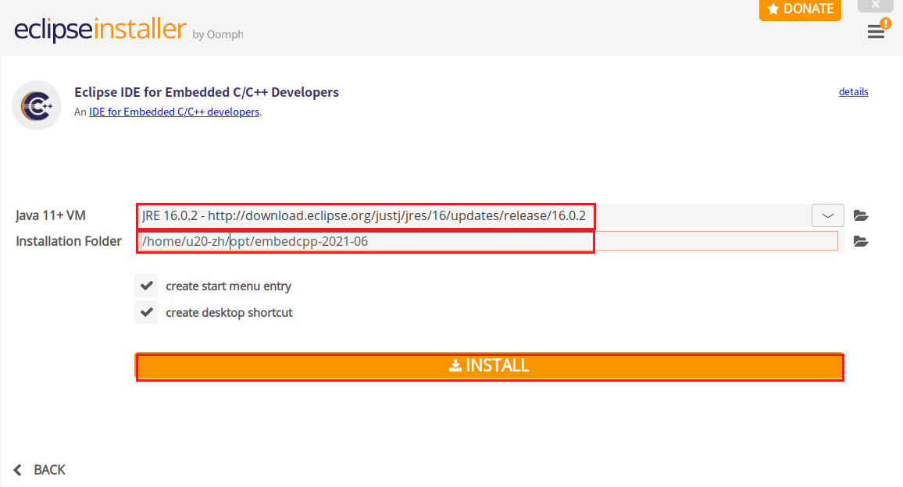

3. 调试配置
右键工程，选择Debug As >Debug Configurations...操作界面如下：
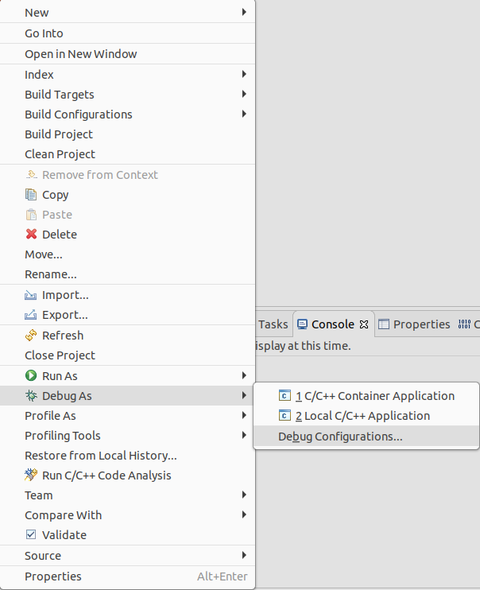
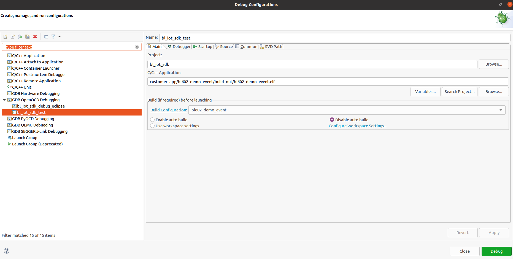
打开后新建一个调试平台，点击New launch configuration，然后配置，请按照下面所示图进行配置，大致如下：
main界面配置
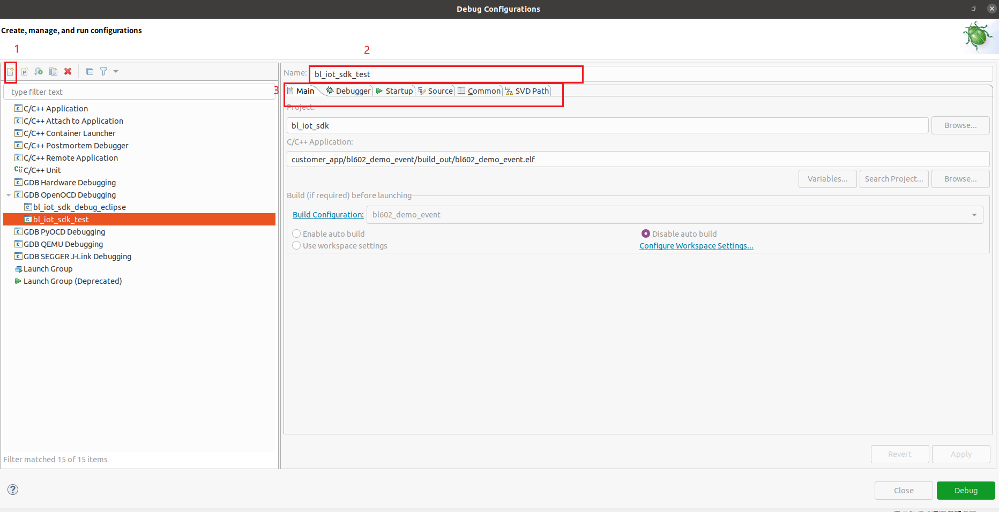
Debugger配置
- openocd工具相关路径（
${project_loc}/tools/ide/openocd/linux64/bin/openocd） - gdb等协议的端口号
- openocd配置文件和调试硬件配置相关文件（
-f tools/debug/openocd_cfg/if_bflb_link_DVK.cfg和-f tools/debug/602/tgt_602_xip.cfg） - gdb调试工具（
${project_loc}/toolchain/riscv/Linux/bin/riscv64-unknown-elf-gdb） - 调试硬件初始化文件配置（
-x tools/debug/602/602.init）
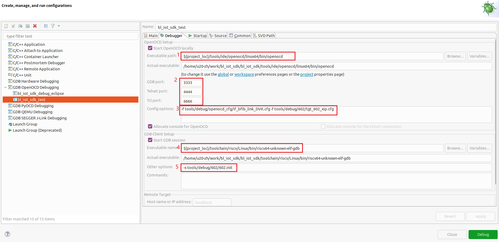
Startup配置
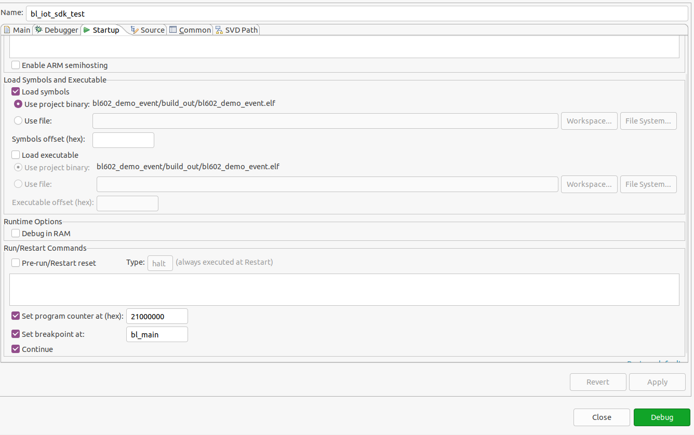
Common配置
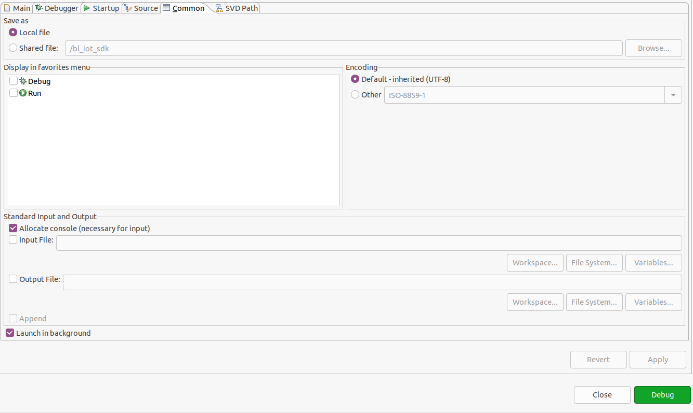
SVD Path配置
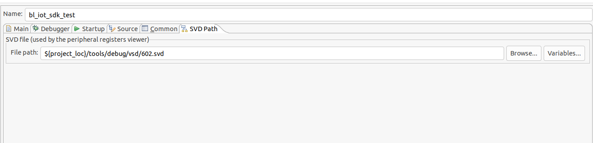
4. debug
首先让板子跑起来，使用快捷键 F11 启动 Debug，Freedom Studio会先编译工程(注意使用快捷键时确认使用的.launch文件名是自己配置的launch文件，可以通过工具栏 Run > Debug As > 进行查看)，调试功能如下图所示：
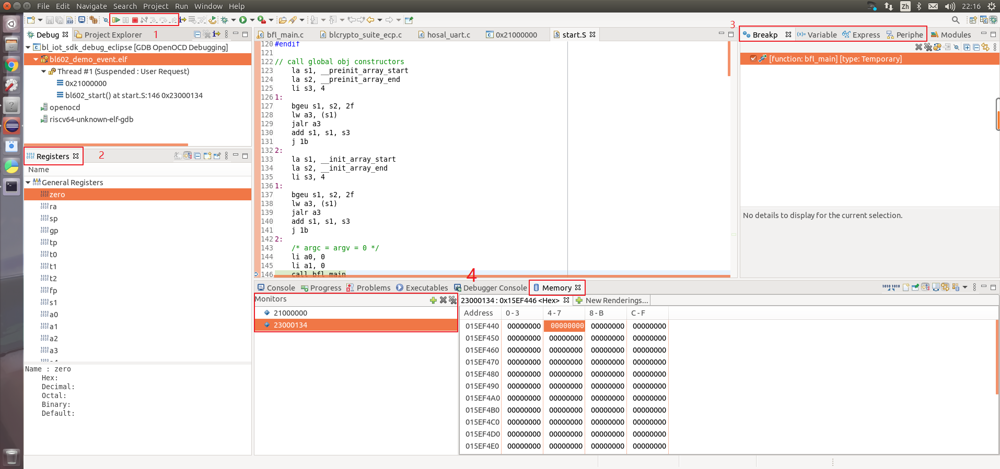
1号区功能介绍，从左向右
- 按钮
Resume（ F8）一下，如果Debug congfiguration中有配置,可以看到程序停在 bfl_main() 主函数处，此时可以点击下图中的3个按钮 - 按钮
Suspend是暂停调试，当想让调试，查看代码某个数据信息时，可以点击该按钮，暂停调试； - 按钮
Terminate（Ctrl + F2），点击此按钮可以终止退出调试； - 按钮
Step Into（F5） 单步执行，遇到子函数就进入并且继续单步执行； - 按钮
Step Over（F6）在单步执行时，在函数内遇到子函数时不会进入子函数内单步执行，而是将子函数整个执行完在停止，也就是把子函数整个作为一步； - 按钮
Step Return（F7）在单步执行到子函数内时，用Step Return就可以执行完子函数余下部分，并返回上一层函数。
2号功能区
Registers：该标签是对cpu通用寄存器的显示，pc，sp等寄存器；

3号功能介绍，标签从左向右
- 标签
Breakp是对断点的显示，全局有多少断点都会显示在此处；

- 标签
Variable是对环境变量的显示，当调试暂停时，你的鼠标暂停在某变量时，该标签便会显示相关参数的数据信息；

- 标签
Express可以添加相关想要查看到变量，该标签添加完变量时，变量的信息会实时的变化；
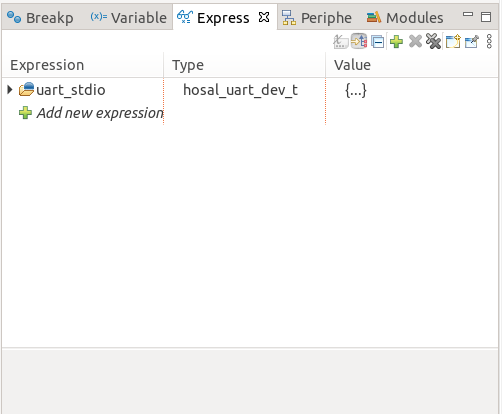
- 标签
periphe是对底层硬件寄存器的查看，该数据是和上面配置的vsd文件有关，如果上面没有配置该文件，此处将是空白显示，勾选的标签将会在内存的标签中显示。
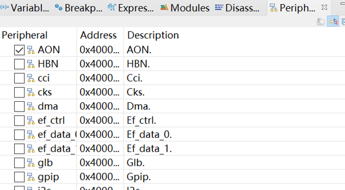
4号区
Memory该标签是对硬件内存的查看，可以添加相关硬件地址，可以看到该地区数据的变化。
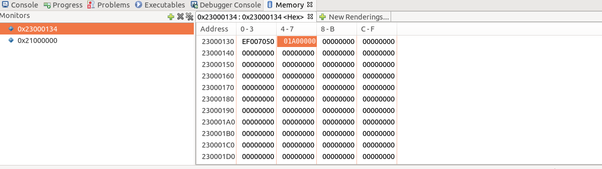